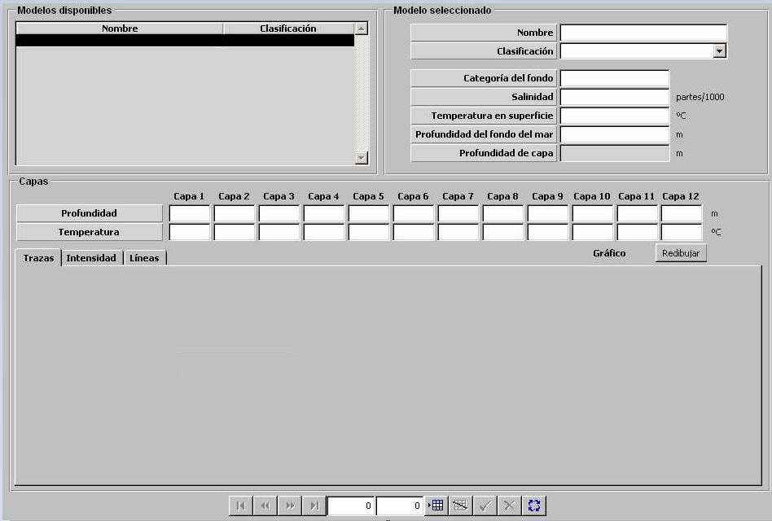

Batitermia

Mediante la tabla de Batitermia, se especifican los parámetros necesarios para generar el mapa batitérmico que simula el comportamiento de las ondas sonoras en el agua transmitidas desde una fuente de emisión. El mapa batitérmico es tenido en cuenta por los modelos de sonar activo y pasivo para determinar si un posible contacto en superficie o sumergido es detectado. El modelo de propagación de ondas acústicas empleado para el cálculo del mapa batitérmico se basa en la expresión de Wilson para la velocidad de las ondas sonoras y la Ley de Snell.
Los parámetros necesarios son los siguientes:
Categoría del Fondo: Este parámetro determina el coeficiente de reflexión para los rayos acústicos que inciden en el fondo marino.
Unidades: ---
Rango: 1 – 9
Ejemplo:
Si Categoría del Fondo = 1 ⇒ BAJA reflexión de rayos acústicos (@10%).
Si Categoría del Fondo = 9 ⇒ ALTA reflexión de rayos acústicos (@90%).
Salinidad: Este parámetro determina la salinidad media del agua del mar.
Unidades: partes / 1000
Rango: 25 – 40
Temperatura en Superficie: Este parámetro determina la temperatura en la superficie del agua.
Unidades: ºC
Rango: -30.0 – 30.0
Profundidad del Fondo del Mar: Este parámetro determina la profundidad del fondo marino.
Unidades: metros
Rango: 0 – 9999
Profundidad de Capa: Este parámetro determina la profundidad de capa, la cual es mostrada sobre la representación gráfica de la Traza Batitérmica.
Unidades: metros
Rango: 0 – 9999
Traza Batitérmica: Mediante los siguientes parámetros se determina la traza batitérmica como curva de temperatura según profundidad. Esta curva se modela mediante doce pares de puntos (Temperatura, Profundidad) correspondientes a doce capas de temperatura significativas. Las doce capas deben representar los máximos, mínimos y puntos de inflexión de dicha curva hasta el fondo marino.
Profundidad – Capa 1 a 12:
Unidades: metros
Rango: 0 – 9999
Temperatura – Capa 1 a 12:
Unidades: ºC
Rango: -30.0 – 30.0
Representaciones Gráficas: Las siguientes representaciones gráficas ilustran el mapa batitérmico obtenido a partir de los parámetros introducidos. De este modo el operador puede comprobar que el comportamiento del modelo batitérmico se ajusta a lo esperado, sin necesidad de probarlo en ejecución, de modo que pueda validar así los parámetros introducidos.
Los gráficos se actualizan pulsando el botón Redibujar o el botón Validar de la Barra de Navegación
Trazas: Esta gráfica representa la Traza Batitérmica introducida como curva de Temperatura del Agua frente a Profundidad y la curva correspondiente obtenida a partir de la expresión de Wilson de Velocidad de Propagación de Onda Acústica frente a Profundidad.

Intensidad: Esta gráfica representa el mapa batitérmico obtenido a partir de la Traza Batitérmica y el resto de parámetros introducidos, aplicando la ley de Snell. Este mapa se ilustra mediante una matriz batitérmica en la que cada cuadrícula representa mediante su intensidad de color la probabilidad de detección sonar a la profundidad y distancia correspondiente.
Esta matriz batitérmica es distinta dependiendo de la profundidad del sonar. Cada vez que se modifiquen los parámetros y / o traza batitérmica y se desea consultar el resultado se debe introducir la profundidad del sonar deseada (que debe ser menor que la profundidad del fondo del mar introducida), pulsar Calcular y a continuación pulsar Dibujar Distancia o Dibujar Rejilla.
Mediante Dibujar Distancia se obtiene una representación a distancia constante por cuadrícula, y mediante Dibujar Rejilla se obtiene una representación cuya escala se reduce con la distancia por lo que la representación es de mayor detalle a menor distancia:
Dibujar Rejilla:
| Escala Horizontal | Escala Vertical | ||
| Cuadrículas | Millas por cuadrícula |
Cuadrículas | Pies por cuadrícula |
| 1 a 16 | 0,5 | 1 a 10 | 25 |
| 17 a 64 | 1 | 11 a 17 | 50 |
| 65 a 100 | 2 | 18 a 21 | 100 |
| - | - | 22 a 25 | 200 |
| Fondo de Escala: 100 Millas |
Fondo de Escala: 1800 Pies |
||
Dibujar Distancia:
| Escala Horizontal | Escala Vertical | ||
| Cuadrículas | Millas por cuadrícula |
Cuadrículas | Pies por cuadrícula |
| 1 a 100 | 1 | 1 a 25 | 64 |
| Fondo de Escala: 100 Millas |
Fondo de Escala: 1600 Pies |
||

Líneas: Esta gráfica representa mediante rayos la propagación de la onda acústica. Igual que la gráfica anterior, esta representación se actualiza al pulsar Calcular.